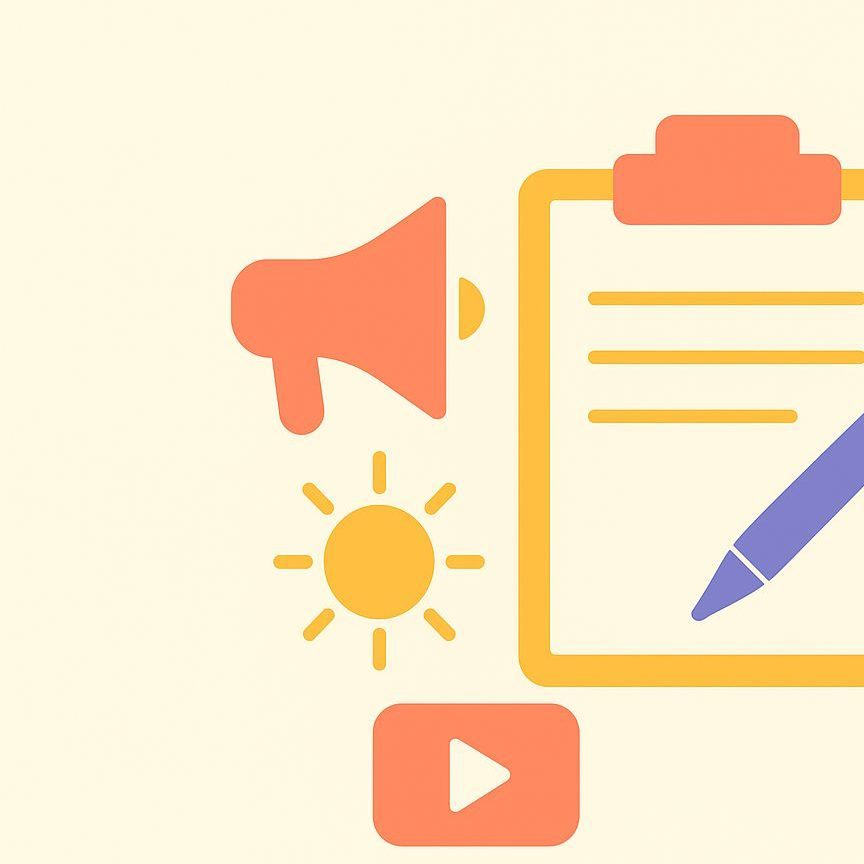

مبادئ الصحافة للأطفال

تعرف على أساسيات الصحافة والإعلام من خلال دروس مبسطة وأنشطة تفاعلية تساعد الأطفال على فهم كيفية كتابة الأخبار والتعرف على وسائل الإعلام المختلفة بطريقة ممتعة وسهلة.

مقدمة في الصحافة والإعلام

كيف أكون إعلامي صغير
للإعلامي مهاراتٍ عديدة تمكنه من التعبير عن كل ما يحدث بطريقة مناسبة، ومن أهمها الإنصات الجيد وتقبل الآراء المختلفة والتحقق من صحة المعلومات قبل نشرها، ويستطيع الفرد تنمية هذه المهارات بالممارسة المستمرة وتجارب أنواعًا مختلفة من أشكال الإعلام، وذلك تهدف هذه الصفحة إلى المساعدة على فهم أساسيات الإعلام بطريقة مبسطة وتفاعلية، من خلال تعريفه على أنواع الإعلام وتدريبه على بعض الأنشطة التطبيقية، ليتمكن الطفل من التعبير عن أفكاره بوضوح، ويتعلم كيفية بناء محتوى هادفًا يعتمد على الكتابة والتصوير والتقديم الصوتي.
سنركز على أكثر الأنواع انتشارًا، وهي:
أنواع المحتوى الإعلامي
1. كتابة الخبر
الخبر هو نقل معلومة جديدة تهم المتلقي وتجيب عن الأسئلة الأساسية للخبر وهي: من؟ ماذا؟ متى؟ أين؟ ولماذا؟
هذه الأسئلة تضم جميع الجوانب المهمة للحدث، وتوصله بشكل موجز يؤدي وظيفة "الإخبار".
نلخص خطوات كتابة الخبر:
- تحديد الحدث
- جمع معلومات صحيحة ودقيقة.
- كتابة الجمل الأساسية التي تجيب عن الأسئلة الخمسة.
- ترتيب المعلومات بدءًا بالأهم.
- مراجعة النص للتأكد من صحته ووضوحه.
نشاط تطبيقي:
اكتب خبرًا عن فعالية مدرسية شاركت فيها أو شاهدتها
2. التقرير
هو عرض الحدث أو الموضوع بتفاصيل أكثر من الخبر، يجمع ما بين السرد والمعلومة ويفيد الذي يبحث عن معلومات دقيقة أكثر للحدث مما يعني أنه يتجاوز الخبر من العمق والإيضاح.
خطوات إعداد التقرير:
- تحديد موضوع أو حدث.
- جمع معلومات من عدة مصادر، والتأكد منها.
- كتابة مقدمة تجذب المتلقي.
- عرض التفاصيل بترتيب متسلسل ومنطقي.
- كتابة خاتمة تلخص الفكرة الرئيسة.
نشاط تطبيقي:
اكتب تقريرًا عن حفل مدرسي انضممت له، أو تجربة علمية شاركت فيها.
3. التحقيق
هو التعمق في موضوع أو قضية معينة ويكون من خلال جمع معلومات من مصادر متعددة لمعرفة الأسباب والنتائج، ماذا حدث؟ ولماذا حدث؟ يركز على كشف تفاصيل جديدة تساعد المتلقي ليفهم الموضوع بشكل أوسع.
خطواته:
- اختيار قضية مهمة.
- جمع معلومات من أكثر من مصدر.
- طرح أسئلة تكشف أسباب المشكلة.
- تحليل الآراء والمعلومات.
- كتابة التحقيق وعرض النتائج.
نشاط:
اختر مشكلة أو ظاهرة في المدرسة أو في منزلك، اسأل عدة أشخاص عنها، واكتب تحقيقًا يوضح ما الأسباب التي أدت إليه.
4. المقال
المقال ينقسم لنوعان وهما:
مقال الرأي، وهو نص يعبر فيه الكاتب عن رأيه في موضوع عام، ويقدّم تفسيرًا أو تحليلًا يساعد القارئ على فهم الفكرة.
والآخر المقال الأدبي: وهو نص يدور عن اهتمامات الكاتب وتجاربه الشخصية، ويكون بلغة بسيطة تناسب الجمهور المتلقي يساعد في الإستفادة من تجارب الآخرين وتبادل الخبرات.
خطواته:
- اختيار موضوع يهم الناس.
- تحديد فكرة المقال.
- كتابة مقدمة قصيرة.
- عرض الأفكار التي تريد عرضها.
- كتابة خاتمة تلخص الفكرة.
نشاط:
اختر نوع من أنواع المقال واكتب مقالًا قصيرًا يناسب النوع ويوصل هدف معين إما رأي أو إفادة الآخرين.
5. التصوير الإعلامي
التصوير عنصر مهم في الإعلام، فهو ينقل الحدث إلى الجمهور بصريًا، ويستطيع الإعلامي الإكتفاء به إذ كان يشرح جميع جوانب الحدث، وفي حال كانت هناك جوانب مبهومة يُنصح بإضافة نص يدّعم المحتوى البصري.
إرشادات التصوير:
- توفر جهاز تصوير (كاميرا - هاتف ذكي)
- التأكد الإضاءة المناسبة.
- تثبيت الكاميرا لتجنب الاهتزاز.
- اختيار زاوية مناسبة وتخدم الفكرة.
- التركيز على عنصر الحدث الرئيسي.
- مراجعة الصورة أو الفيديو قبل نشره.
نشاط تطبيقي:
إلتقط صورة أو فيديو يناسب الخبر الذي كتبته بالنشاط السابق.
6. الإعلام بالصوت (البودكاست)
البودكاست يعبر وسيلة حديثة للتعبير ويستخدم فيه الصوت فقط، ويشمل جميع المجالات، مثل: (تعليمية - ترفيهية - دينية - ثقافية)
خطوات إعداد بودكاست:
- توفر أجهزة تسجيل الصوت المناسبة.
- اختيار موضوع الحلقة.
- كتابة نقاط واضحة ومختصرة.
- التسجيل الصوت في مكان هادئ.
- مراجعة التسجيل وتعديله.
- مشاركة الحلقة عبر منصة رقمية.
وبعد أن تعرفنا على أهم أنواع الإعلام
ندعوك لصفحة المشاركات والفعاليات لنطبق ماتعلمناه ونشارك الآخرين خبراتنا.